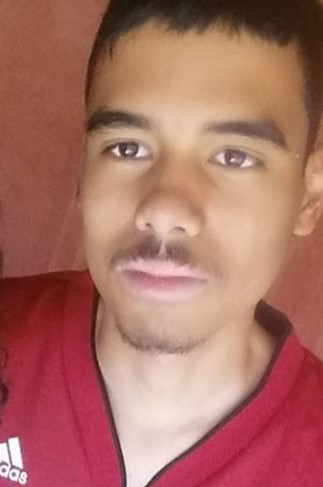

Qui sommes-nous ?
Nous sommes un groupe de trois étudiants de l'Efrei Paris. Nous sommes fiers de vous présenter ce projet WEB
Les auteurs du site :
Herizo LEDDA
 Chargé de la coordination des pages et de l'organisation générale du site.
Email : herizo.ledda@efrei.net
Marie BLEIN
Chargée des textes et du contenu des pages du site.
Email : marie.blein@efrei.net
Antoine BINET
Chargé de l'aspect visuel ainsi que fonctionnel du site
Email : antoine.binet@efrei.net